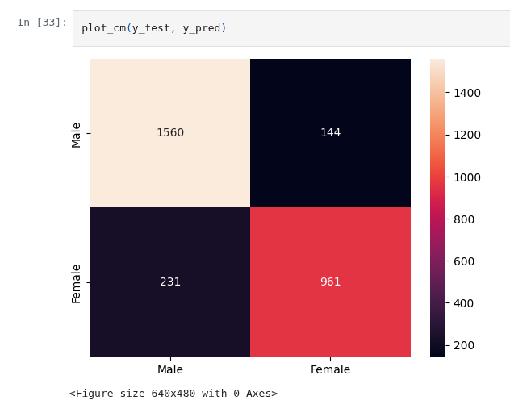

OKCupid Gender Prediction
Tech: Python, Pandas, Scikit-Learn, Machine Learning
View on GitHubProject Overview
This project aims to predict the gender of users from the OKCupid dataset using machine learning models. The dataset includes demographic, lifestyle, and preference-related features. The analysis explores various classification models to determine the best-performing approach.
Preprocessing Steps
- Data Cleaning: Grouped similar categorical values, handled missing values.
- Encoding & Scaling: One-hot encoded categorical features and standardized numerical features.
- Hyperparameter Tuning: Used GridSearchCV, RandomizedSearchCV, and BayesSearchCV.
Models Used & Results
| Model | Validation Score | Test Score | Training Time |
|---|---|---|---|
| Logistic Regression | 0.8653 | 0.8778 | 21s |
| Decision Tree | 0.8499 | 0.8567 | 22.3s |
| Random Forest | 0.8590 | 0.8691 | 1m 47.3s |
| SVM | 0.8662 | 0.8809 | 2m 52.6s |
Key Findings: SVM achieved the highest accuracy (0.8809) but was computationally expensive. Logistic Regression performed almost as well (0.8778) while being significantly faster.
Panoramica del Progetto
Questo progetto mira a prevedere il genere degli utenti dal dataset di OKCupid utilizzando modelli di machine learning. L'analisi esplora vari modelli di classificazione per determinare l'approccio con le migliori prestazioni in base a dati demografici e stile di vita.
Fasi di Pre-elaborazione
- Pulizia dei Dati: Raggruppamento di valori simili e gestione dei valori mancanti.
- Codifica e Scaling: One-hot encoding e standardizzazione delle caratteristiche numeriche.
- Hyperparameter Tuning: Utilizzo di GridSearchCV, RandomizedSearchCV e BayesSearchCV.
Modelli Utilizzati e Risultati
| Modello | Punteggio Validazione | Punteggio Test | Tempo di Training |
|---|---|---|---|
| Logistic Regression | 0.8653 | 0.8778 | 21s |
| Decision Tree | 0.8499 | 0.8567 | 22.3s |
| Random Forest | 0.8590 | 0.8691 | 1m 47.3s |
| SVM | 0.8662 | 0.8809 | 2m 52.6s |
Risultati Chiave: L'SVM ha raggiunto la precisione più alta (0.8809) ma è risultato computazionalmente costoso. La Regressione Logistica ha ottenuto risultati quasi altrettanto buoni (0.8778) ma in modo significativamente più veloce.